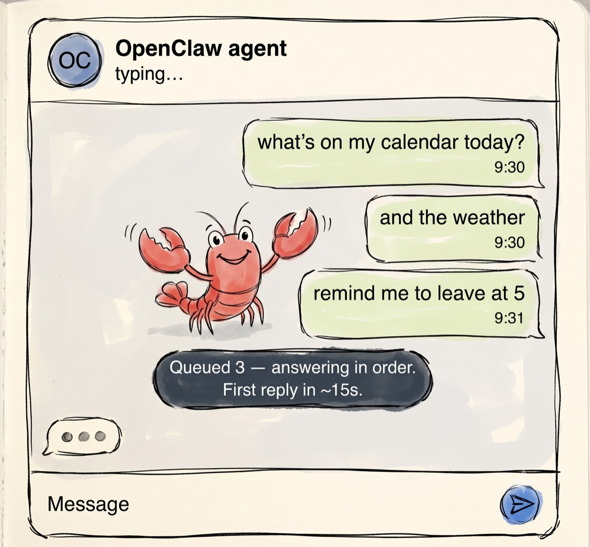
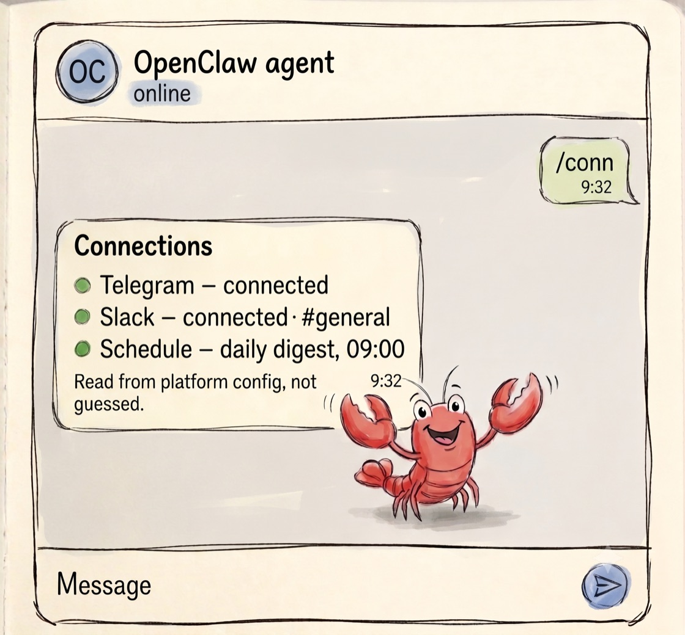
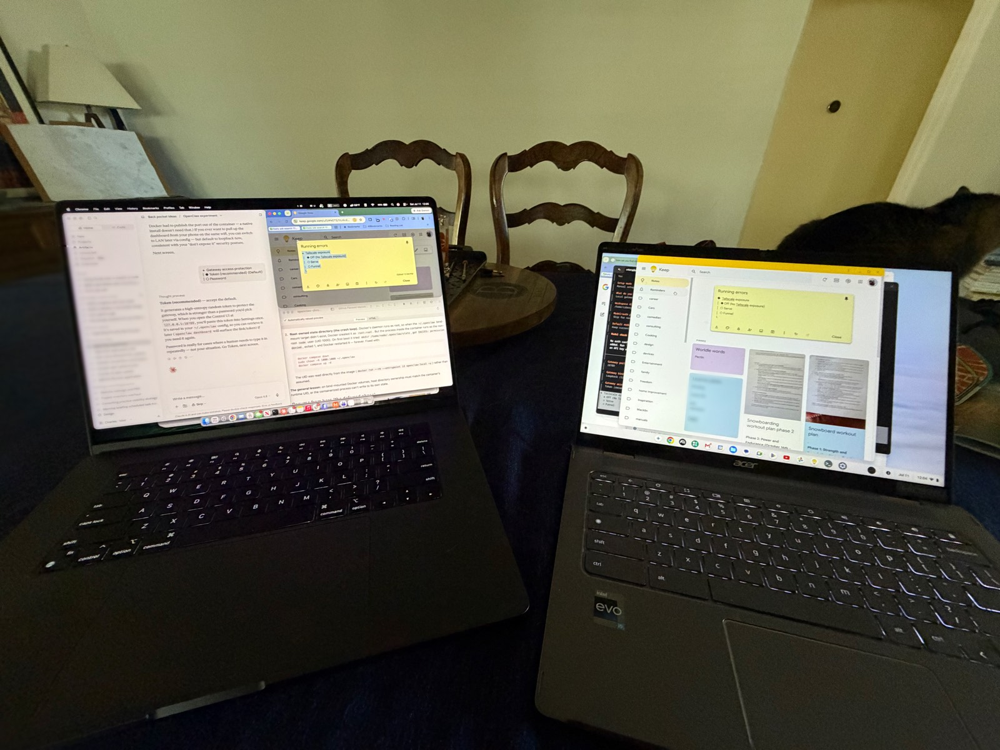

Self-directed research · OpenClaw
Feet first into OpenClaw
Charles Berg — twenty years of product design at Google, Microsoft, and Motorola. Accessibility is the through-line.
A note on this page: it opens on a case study I built for OpenClaw, rather than my shipped work. That shipped, measured work — Magnifier, Simple View, and Guided Step — is linked at the bottom.
Four product findings. I did not read about agent UX. I lived in it. I stood up a real multi-agent stack, hardened it, and have used it every day since. Then I wrote down where the experience breaks, why, and what I would design instead.
00 / SetupThe setup
I loved what I had read about OpenClaw, in particular the user choice of AI. The promise is sovereignty: your own AI, on your own hardware. Run your own LLM if you have the technical know-how, or pick an AI subscription, premium to cheap, if you don't. Either way, your data stays on the machine.
OpenClaw, to me, offers the opportunity to avoid the mistakes society made in the mid-2000s by allowing tech companies to monopolize and stifle user choice. That loss of choice affects the people who need it most: people on a fixed income, people with disabilities, people who are actively climbing upward but are not there yet.
So, I, a designer, finally found some time to jump into the deep end. I saw how it would change the way I see and use AI as a tool. I also realized this is early days for OpenClaw: the promise of open is there, but it takes a tech-savvy person to really grasp it.
Drawing on my experience at FAANG companies, I quickly realized that I needed a team to set this up cleanly and securely. So I created three chat “agents” in Claude: a founder, a product manager, and a security officer. They pooled their expertise into shared docs, and then I worked with the founder to weigh tradeoffs, prioritize steps, and optimize the system.
By day two, we had a running gateway, two agents on Telegram and Slack, and a security review with a fifteen-item risk register. Although I saw the revolution on the horizon, I also noticed that OpenClaw has just begun the path toward turn-key operation. Here are the four things I saw from a designer's perspective.
01 / ResponsivenessPerceived responsiveness is the whole game
Building the first agent felt like magic. I set up its persona and files quickly. Then I sent three follow-ups via Telegram and got three minutes of silence, followed by five replies at once.
Under the hood the runtime was serializing my turns and cold-starting a process per turn. In Telegram I had no signal my turns were being queued, so I did the natural thing. I sent more messages. Which made the eventual burst more confusing.
The lack of clear turn-state indicators was the problem. The typing indicator was small and at the top of the screen, and there was no queue acknowledgment. No expectation had been set. A fast tool became disorienting the moment it started “thinking,” and the interface invited me to make it worse.

What I would design: more prominent progress indicators, optimistic acknowledgments, warm-start, and an honest latency contract.
02 / Self-knowledgeAn agent is the least reliable narrator of its own configuration
I asked one of my agents, over Telegram, whether it could also post to its Slack channel. It answered with total confidence: it had no Slack connection but was happy to post summaries once the connection showed up. In reality, Slack was connected and healthy. The agent was already live in the channel.
The agent has zero knowledge of its own routing, bindings, and schedules, and was inclined to generate a plausible story instead of a true one. Since the agent capably edited its own soul.md, I naturally assumed it could tell me about its configuration. Trust erodes the first time a user acts on a confident answer that turns out to be fiction.

What I would design: it would be awesome if the agent could capably reply with its connection info, just like it can when it reports out its own AI model status. The connection information could be bundled with /status; failing that, one could create a new /conn command.
03 / OnboardingOnboarding wanted me to become a sysadmin
Setup provided me, a non-engineer, developer concepts at every step: container permissions, a background service, plaintext tokens I had to move between apps by hand, schema errors written for engineers, channel IDs that failed silently when I used names.
To get through it, I kept Claude open on my laptop and copied what it told me into the Chromebook, command by command. I felt like a meatsack: the manual relay between the AI that understood the system and the machine that ran it.

The identity, trust, and permissions layer is exactly where a normal person should be able to grant access safely, without ever handling a raw secret.
What I would design: this is the opportunity: create an onboarding simple enough that you can explain it to whoever shows up for an OpenClaw workshop at the local public library.
04 / AccessibilityThe default interface is a screen-reader problem
The agent streams its thinking the way a lot of AI chat does now: fleeting status text before the real answer. On Telegram, the channel the product points you to, there is no facility for that pattern. The interim thoughts arrive as message bubbles that appear and then vanish.
For a sighted user it is a flicker. For a blind user it can be chaos: content announced and then pulled away, with no stable final target.
An interface a screen reader cannot follow leaves blind users behind by default, and that is a design gap worth closing.

What I would design: a stable, appended final answer instead of a replaced one, interim status in a form assistive tech can ignore or read once, and ARIA-live discipline ported to the messaging surface.
05 / Through-lineThe through-line
Put the four together and a pattern falls out. The software is free. The usable, secure, accessible experience still requires technical heft. We can close that design problem.
This is the same lesson I have reached from the other direction for twenty years. Design for the people a system serves last, the disabled users, the older adults, the ones without a terminal and a $100 Claude plan, and you do not just include them. You build a better on-ramp for everyone: the curb cut that helps the parent with a stroller, too.
That last mile is the job. It is why this role exists, and it is the work I have spent a career doing.
PostscriptContributing back
I didn’t want to only point at problems. Finding 3 was about onboarding that leaks its own plumbing, and the ChromeOS and Crostini traps I hit were exactly that. They weren’t in the docs. So I wrote them up and sent them upstream.
Issue first, the way OpenClaw’s contributing guide asks. Then my first GitHub pull request to openclaw/openclaw: a new ChromeOS platform page. It mirrors the Linux page, adds a nav entry and the OS picker, and links back from Linux. Four files, docs-only.
I held it to the same bar as the rest of this piece. Every link verified. One step I tested but couldn’t confirm, so I left it out rather than guess it.
Open for review as of July 2026. Found the problem, shipped the fix.
See the issue (opens in new tab) → · See the pull request (opens in new tab) →